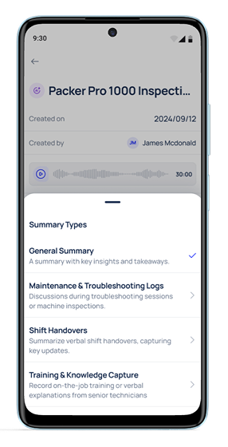
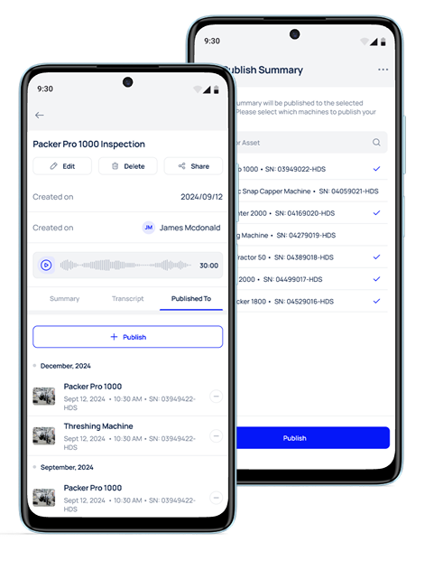
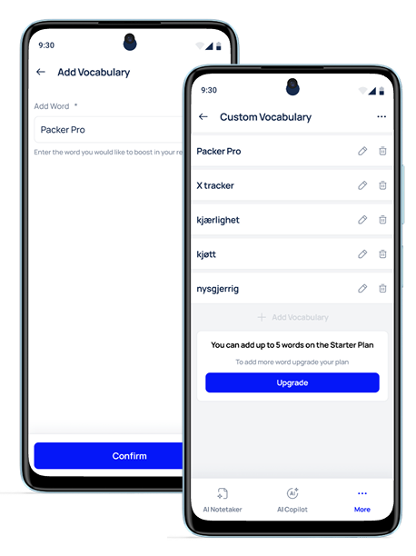

AI Notetaker for Field Service Technicians
Zero to One B2B SaaS MVP
0→1 · AI product design · Speech-to-text · Journey mapping · Field service · MVP
Company:
Makula
Role:
Freelance Product Designer
Year:
2024-2025
Team:
Saman Farooq, Gohar Nadeem (Product Team), Shahzaib Ali (Sr. Product Designer)
Technicians documented facility visits manually, causing delays and inconsistency in reports and information gaps for managers.
I led UI/UX design and prototyping for the MVP, working with the product team and a senior product designer.

Designing the User Journey
| Stage | Before Visit | Arrival & Setup | During Visit | After Visit |
|---|---|---|---|---|
| Objective | Find work orders for the day's visit, Review machine history & previous service notes. | Confirm machine/equipment to be serviced, Take machine history from facility team. | Diagnose the problem, Perform repairs or maintenance. | Write visit report, Share with manager, Share with facility. |
| Pain Points | Searching for logs or context on the previous visit. | Lack of stable Internet connection, Important info missed or forgotten. | Visit interruptions, Difficulty in notation or photography while repairing. | Manual notation, Inconsistent reports & structure, Missing information, Incomplete/Delayed reports, Separated reports & work orders, Documentation not centralised |

Features
Designed summary types that give structured outputs for common tasks and visit types.


Added image capture so technicians could attach evidence to summaries.
Linked notes to assets, making documentation part of the platform's operational record.

